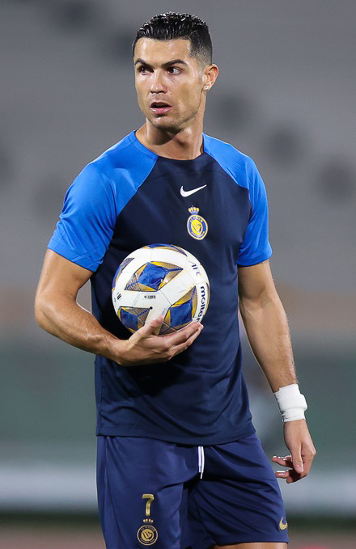
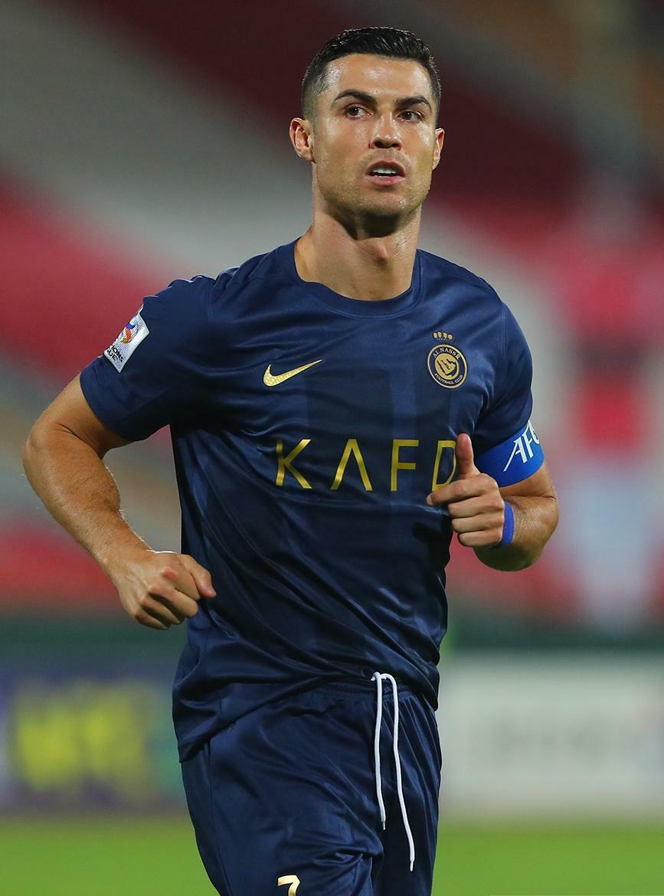

Le site

Tout sur la légende CR7
Explorez sa biographie, son palmarès impressionnant, une galerie photo et les prochains rendez-vous à ne pas manquer.

À propos
Ses débuts à Madère, son ascension au Sporting puis sa carrière au plus haut niveau européen.

Palmarès
Trophées, records individuels et collectifs : la liste impressionnante de ses distinctions.
Galerie
Une sélection de photos marquantes de sa carrière, sous licence libre.